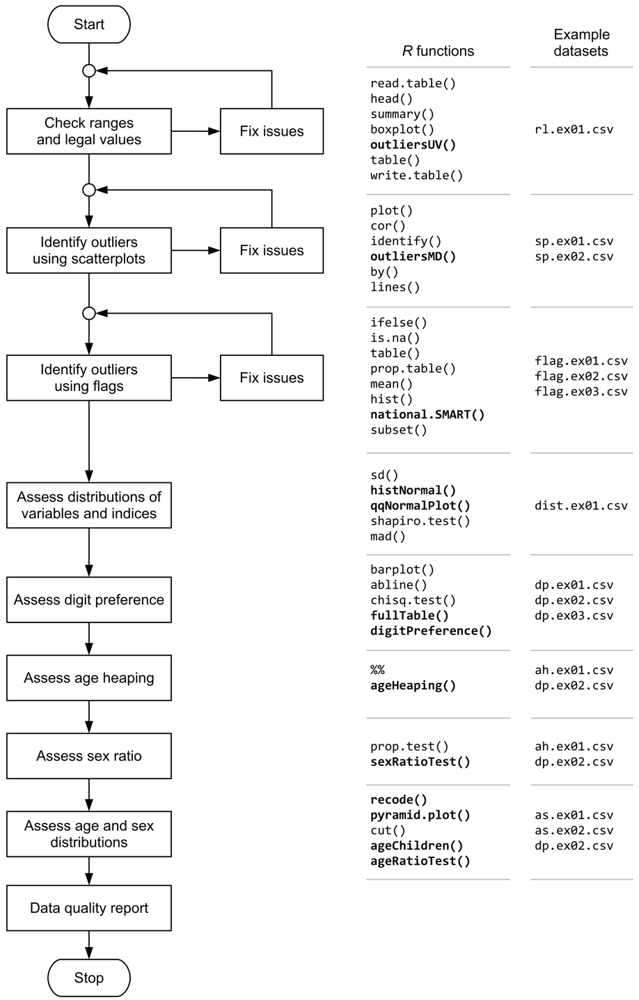

National Information Platforms for Nutrition (NiPN) is an initiative of the European Commission to provide support to countries to strengthen their information systems for nutrition and to improve the analysis of data so as to better inform the strategic decisions they are faced with to prevent malnutrition and its consequences.
As part of this mandate, NiPN has commissioned work on the development of a toolkit to assess the quality of various nutrition-specific and nutrition-related data. This is a companion R package to the toolkit of practical analytical methods that can be applied to variables in datasets to assess their quality.
The focus of the toolkit is on data required to assess anthropometric status such as measurements of weight, height or length, MUAC, sex and age. The focus is on anthropometric status but many of presented methods could be applied to other types of data. NiPN may commission additional toolkits to examine other variables or other types of variables.
Requirements
- R version 3.4 or higher
Extensive use is made of the R language and environment for statistical computing. This is a free and powerful data analysis system. R provides a very extensive language for working with data. This companion package has been written using only a small subset of the R language. Many of the data quality activities described in the toolkit are supported by R functions included in this package that have been written specifically for this purpose. These simplify the assessment of the quality of data related to anthropometry and anthropometric indices.
Installation
You can install nipnTK from CRAN:
install.packages("nipnTK")You can install the development version of nipnTK from GitHub with:
if(!require(remotes)) install.packages("remotes")
remotes::install_github("nutriverse/nipnTK")Usage
Data quality is assessed by:
Range checks and value checks to identify univariate outliers - guide
Scatterplots and statistical methods to identify bivariate outliers - guide
Use of flags to identify outliers in anthropometric indices - guide
Examining the distribution and the statistics of the distribution of measurements and anthropometric indices - guide
Assessing the extent of digit preference in recorded measurements - guide
Assessing the extent of age heaping in recorded ages - guide
Examining the sex ratio - guide
Examining age distributions and age by sex distributions - guide
These activities and a proposed order in which they should be performed are shown below:

Citation
If you find the nipnTK package useful, please cite using the suggested citation provided by a call to the citation function as follows:
citation("nipnTK")
#>
#> To cite nipnTK in publications use:
#>
#> Mark Myatt and Ernest Guevarra (2023). nipnTK: National Information
#> Platforms for Nutrition (NiPN) Data Quality Toolkit R package version
#> 0.1.1.9000 URL https://nutriverse.io/nipnTK/ DOI
#> 10.5281/zenodo.4297897
#>
#> A BibTeX entry for LaTeX users is
#>
#> @Manual{,
#> title = {nipnTK: National Information Platforms for Nutrition (NiPN) Data Quality Toolkit},
#> author = {{Mark Myatt} and {Ernest Guevarra}},
#> year = {2023},
#> note = {R package version 0.1.1.9000},
#> url = {https://nutriverse.io/nipnTK/},
#> doi = {10.5281/zenodo.4297897},
#> }Community guidelines
Feedback, bug reports and feature requests are welcome; file issues or seek support here. If you would like to contribute to the package, please see our contributing guidelines.
This project is released with a Contributor Code of Conduct. By participating in this project you agree to abide by its terms.